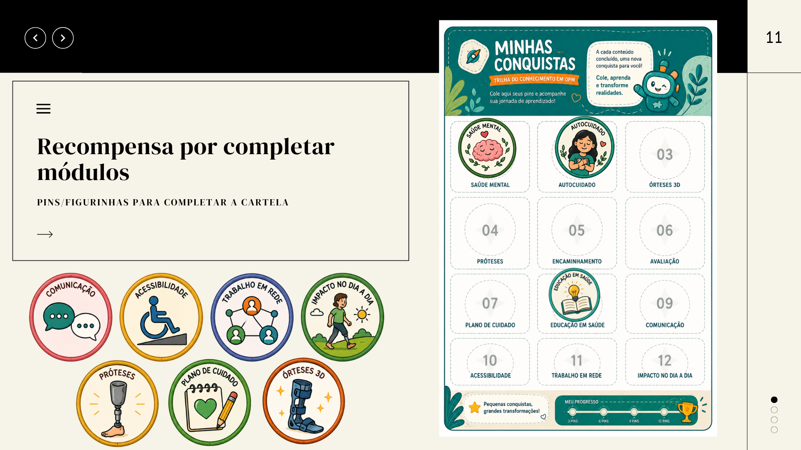

Olá, Dr. João Paulo 👋
Digitrilha em Tecnologia Assistiva · ~30 horas · 14 Unidades
Matriz Curricular da Trilha
5 Eixos · 14 UnidadesCompreenda o conceito legal de Tecnologia Assistiva (LBI), o que são OPMs no SUS, a diferença entre órtese, prótese e recurso auxiliar, e o papel da equipe multiprofissional.
- 1.1 O que é Tecnologia Assistiva
- 1.2 O que são OPM
- 1.3 Diferença entre Órtese, Prótese e Recurso Auxiliar
- 1.4 Quem participa do processo de cuidado
- 1.5 OPM no contexto do SUS
Compreenda os conceitos da CIF da OMS: estrutura vs. função corporal, metas SMART, participação social, barreiras ambientais e prevenção do abandono.
- 2.1 Função × estrutura corporal
- 2.2 Objetivo terapêutico
- 2.3 Participação e independência
- 2.4 Barreiras ambientais
- 2.5 Adesão ao tratamento
Investigação da demanda, avaliação biomecânica de força e amplitude, análise da rotina e critérios de encaminhamento regulado ao CER.
- 3.1 Investigação da demanda & Escuta na UBS
- 3.2 Exame físico e funcional (ADM, Força e Ashworth)
- 3.3 Análise da rotina domiciliar e comunitária
- 3.4 Critérios de encaminhamento regulado (SISREG)
Indicações clínicas, contraindicações formais, metas de curto e longo prazo, e alinhamento de expectativas do usuário.
- 4.1 Indicações clínicas e funcionais frequentes
- 4.2 Contraindicações formais e deformidades rígidas
- 4.3 Metas de curto vs longo prazo
- 4.4 Alinhamento de expectativas com a família
Identificação dos 5 erros mais frequentes na provisão de OPM no SUS e estratégias práticas de mitigação.
- 5.1 Os 5 erros frequentes na provisão de OPM
- 5.2 Desconsiderar a acessibilidade domiciliar
- 5.3 Prescrever sem avaliar espasticidade e pele
- 5.4 Falta de reavaliação e seguimento longitudinal
Conceitos biomecânicos de sustentação e o **Desafio Prático de Montagem de OPMs em 8 Fases** (Mão, Dinâmica, Punho, AFO, Termoplástico, Prótese, Bengala e Andador).
- 6.1 Objetivos biomecânicos das órteses
- 6.2 Sistema de 3 pontos de pressão biomecânica
- 6.3 Materiais moldáveis (Termoplásticos)
Órteses de Membro Superior (estáticas e dinâmicas), Membro Inferior (AFO, KAFO) e Coluna (Colete de Boston).
- 7.1 Órteses de Membro Inferior (AFO, KAFO, GRAFO)
- 7.2 Órteses de Membro Superior (MMSS)
- 7.3 Órteses de Coluna (Colete de Boston, TLSO)
Exopróteses vs. Endopróteses, componentes (Encaixe/Socket, Suspensão, Peças Articuladas) e alinhamento familiar.
- 8.1 Exopróteses vs Endopróteses
- 8.2 Componentes Protéticos (Membro Inferior)
- 8.3 Meios Auxiliares de Locomoção
Etapas clássicas do gesso: moldagem negativa, modelo positivo de gesso, modificação manual e termoformagem.
- 9.1 Moldagem Negativa com Atadura Gessada
- 9.2 Preenchimento e Modelo Positivo em Gesso
- 9.3 Retificação Manual e Termoformagem a Vácuo
As 4 etapas do fluxo 3D: Escaneamento 3D sem gesso, Modelagem CAD, Fatiamento CAM (PLA, PETG, TPU) e Impressão FDM.
- 10.1 Escaneamento Anatômico 3D sem Gesso
- 10.2 Modelagem CAD Personalizada
- 10.3 Fatiamento CAM e Impressão FDM em TPU
Matriz comparativa de tempo, custo, personalização, replicabilidade de arquivos e curva de aprendizado.
- 11.1 Matriz Comparativa: Gesso vs Impressão 3D
- 11.2 Repositório Digital CAD e Reimpressão
- 11.3 Aceitação do Usuário e Personalização Estética
Condução da prova física, alívio de pontos de hiperpressão na pele, alinhamento funcional e educação do usuário.
- 12.1 Condução da Prova Física e Ajustes
- 12.2 Inspeção Cutânea e Prevenção de Escaras
- 12.3 Orientação de Uso Gradual e Higiene
Acompanhamento periódico, monitoramento de desgaste do material, reavaliação de metas e manutenção preventiva.
- 13.1 Protocolo de Acompanhamento no SUS
- 13.2 Monitoramento de Crescimento Infantil
- 13.3 Manutenção Preventiva de Componentes
Tomada de decisão clínica por Árvore de Decisão: Caso 1 (José Carlos - AVC/AFO), Caso 2 (Criança PC) e Caso 3 (Ana Paula - Amputação Transradial 3D).
- 14.1 Caso 1: José Carlos (73 anos, AVC, Pé Caído & AFO)
- 14.2 Caso 2: Sofia (6 anos, Paralisia Cerebral Espástica)
- 14.3 Caso 3: Ana Paula (34 anos, Amputação Transradial & 3D)
Galeria de Badges & Recompensas
Acompanhe sua evolução pedagógica, acúmulo de XP e conquistas no SUS.
Insígnias de Maestria
0 / 10 BadgesPioneiro 3D
Módulo 1: Conceito de TA, OPM e Impressão 3D no SUS.
Estrategista Clínico
Módulo 2: Raciocínio clínico para indicação ideal.
Capturador de Formas
Módulo 3: Escaneamento 3D e anatomia digital.
Escultor Digital
Módulo 4: Modelagem CAD e ajustes de malha 3D.
Engenheiro de Parâmetros
Módulo 5: Fatiamento CAM (PLA, PETG, TPU) e fabricação.
Embaixador da Adesão
Módulo 6: Prova física, ergonomia e adesão humanizada.
Visionário da Saúde
Módulo 7: Seguimento clínico e IA na saúde pública.
Velocista Microlearning
Conclusão ágil e focada das aulas práticas.
Mestre da Decisão
Precisão total de 1ª tentativa nos casos clínicos.
Agente Transformador SUS
Badge Supremo: Conclusão integral 100% com maestria.
Quadro Oficial de Recompensas & Certificação

Mapeamento Colaborativo de Fluxos Regionais
Baseado no modelo inovador de São José dos Campos (SP). Assim como no Waze, os profissionais de saúde relatam a realidade do seu município para que a comunidade mantenha a Digitrilha sempre atualizada!
Municípios Cobertos
Relatos Regionais validados
Alinhamento às Portarias SUS
Mural de Experiências e Fluxos Municipais
Fluxo de Prescrição e Regulação de OPM na UBS
"A triagem inicial é realizada pela equipe eMulti na UBS com agendamento via SISREG para o CER II. Documentação necessária: Laudo funcional detalhado + Formulário LME padronizado pela SMS."
Dispensação de Cadeiras de Rodas Posturais
"Na capital, o laudo exige medição antropométrica completa e a Escala de Braden anexada para aprovação do módulo de almofada anti-escaras."
Prototipagem 3D em Órteses de Punho
"O centro municipal de reabilitação aceita arquivos de escaneamento 3D enviados via aplicativo para impressão direta em filamento TPU."